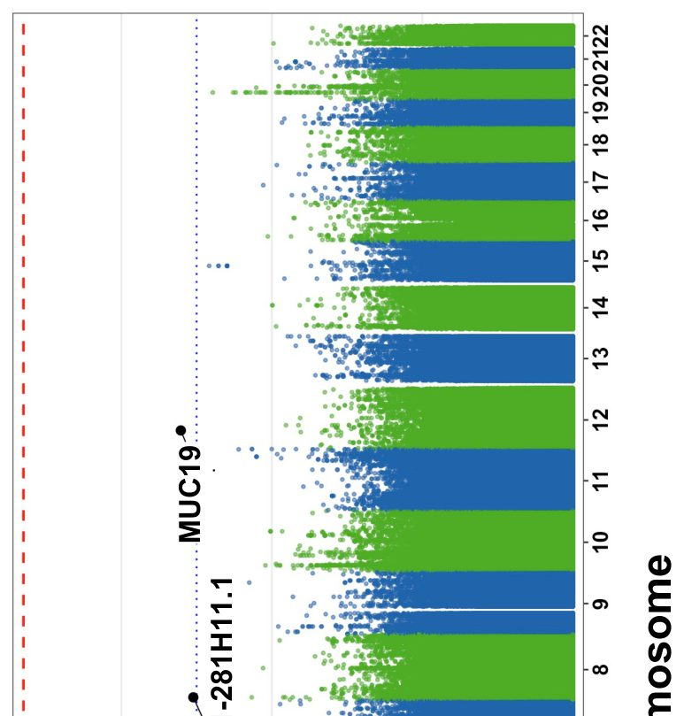
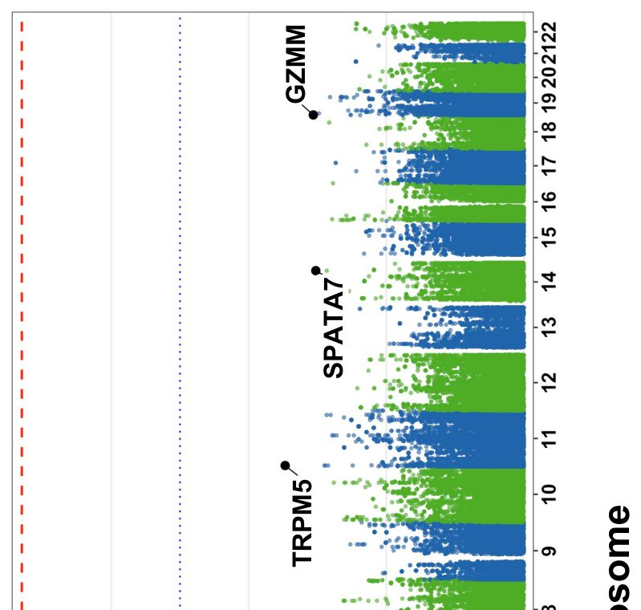

Неліктен кейбір адамдар сепсиске қарсы тұра алмайды: жауап сирек популяциялардың генінде жатыр


Суреттің толық сипаттамасы
1-сурет. Геном бойынша ассоциация нәтижелерінің Манхэттен графигі. Интенсивті терапия бөлімінің 210 пациентіндегі (68 жағдай, 142 бақылау) сепсиске бейімділік үшін жекелеген нұсқалардың ассоциация нәтижелері. X осі хромосомалық позицияны, ал Y осі -log10(p-мәнін) көрсетеді. Үзік қызыл сызық геномдық маңыздылықты (p < 5×10⁻⁸), ал үзік көк сызық болжамды маңыздылық шегін (p < 1×10⁻⁵) білдіреді. Негізгі локустар белгіленген: STK32B (chr4p16.2), RP11-241F15.3 (chr4q13), MUC19 (chr12q12) және chr8p23.1 (DEFB кластері).
Сепсис жыл сайын миллиондаған адамның өмірін қиып, реаниматологияның басты жұмбақтарының бірі болып қалуда. Неліктен бірдей инфекция жұққанда бір адам жазылып кетсе, екіншісі ағзаларының жұмысы тоқтап, көз жұмады? Ғалымдар Катардың тұйық әрі бірегей генетикалық қоры бар тұрғындарының геномын зерттеді. Белгілі болғандай, UBE2L3 геніндегі сирек мутация жасушалардың қабыну реакциясын дер кезінде өшіру қабілетін бұзып, адамды бактериялар алдында дәрменсіз етеді.
Басты ойлар
- Сепсистің генетикалық себептерін іздеу үшін Катардағы 210 реанимация пациентінің геномы секвенирленді
- UBE2L3 геніндегі сирек мутация қабынуды бақылау жүйесін бұзып, инфекцияға сезімталдықты арттырады
- 26 939 адамның деректері бұл гендегі ақаулардың ауыр инфекцияларға әкелетінін растады
Толығырақ
Зерттеу аясында ғалымдар Катардағы реанимация бөлімшелерінде жатқан 210 пациенттің геномына толық секвенирлеу (WGS) жүргізді. Олардың ішінде 68 адам сепсиспен ауырса, 142 пациент бақылау тобында болды. GWAS (геном бойынша қауымдастықтарды іздеу) және REGENIE Firth регрессиясы әдістерінің көмегімен зерттеушілер 31 геннен 40 қауіпті негізін қалаушы мутацияны анықтады. Әсіресе UBE2L3 геніндегі c.2T>G (p.Met1?) мутациясы ерекше назар аударды, себебі ол старт-кодонның жоғалуына (start-loss) және нәтижесінде ақуыз қызметінің толық бұзылуына әкеледі.
Бұл ген нұсқасы сепсисі бар 68 пациенттің үшеуінде кездесіп, бақылау тобында мүлдем табылмады (p = 0.026). Геннің маңыздылығын дәлелдеу үшін авторлар All of Us дерекқорындағы бактериялық инфекциясы бар 26 939 пациенттің мәліметтерін талдады. UBE2L3 геніндегі басқа да зақымдаушы мутациялар ауыр инфекциялардың даму қаупін айтарлықтай арттыратыны белгілі болды (мүмкіндіктер қатынасы 23.10 құрады). Биологиялық механизм тышқандарға жасалған тәжірибелермен расталды: макрофагтарда UBE2L3 генін өшіру қабынуды қоздыратын IL-1Beta цитокинінің ыдырауын бұзып, бақылаусыз қабыну дауылын тудырады.
Шектеулер
Зерттеу небәрі 210 адамнан тұратын шағын таңдамада жүргізілген және бұл жұмыс әлі тәуелсіз рецензиядан өтпеген препринт болып табылады.
Мақаланың толық талдауы
Түйіндеме
Сепсис жыл сайын әлем бойынша шамамен 11 миллион адамның өліміне себеп болады. Негізін қалаушы популяциялардың толық геномын секвенирлеу (WGS) сепсиске бейімділікпен байланысты гендерді анықтауға бірегей мүмкіндік береді. Біз қарқынды терапия бөліміндегі 210 араб пациентінің (68 сепсис жағдайы және 142 бақылау тобы) WGS деректері негізінде GWAS және EXWAS талдауларын жүргіздік.
Түсіндірме
GWAS және EXWAS — бүкіл геном немесе экзом бойынша аурумен байланысты генетикалық өзгерістерді анықтауға көмектесетін статистикалық талдау әдістері.
Іріктеу үшін REGENIE Firth регрессиясы (p < 0.05), CADD көрсеткіші > 20 және AllofUs/gnomAD базаларына қатысты AAF байытылуы сияқты қатаң критерийлер қолданылды. Нәтижесінде 31 гендегі 40 зиянды вариант басым деп танылды.
Басты жаңалық UBE2L3 геніндегі жаңа start-loss варианты (c.2T>G; p.Met1?; CADD = 25.6; SIFT = 0.001) болды. Бұл мутация 68 сепсис пациентінің 3-еуінде анықталды, ал бақылау тобында (142 адам) кездескен жоқ (Фишердің нақты тесті, P = 0.026). All of Us (AoU) деректер базасында UBE2L3 миссенс-мутацияларының жинақталуы бактериялық инфекциялармен байланысты екені расталды (n=26,939 жағдай; SKAT-O P = 2.38 × 10⁻³; OR=23.10; 95% CI = [0.63–845.27]).
Маңызды
UBE2L3 геніндегі сепсиспен байланысты сирек вариант анықталды, бұл клиникалық деректермен және тышқандардағы ген нокауты нәтижесінде туындаған қабынумен расталады.
Дәрілік заттарды әзірлеуге бейімделген жасанды интеллект модельдері UBE2L3 генін сепсиске қарсы дәрілік нысана ретінде 10 балдан 7.8 баллға бағалады. Бұл нәтижелер тышқандардағы UBE2L3 нокауты IL-1Beta делдалдығымен жүретін қабынудың күшеюіне әкелетінімен сәйкес келеді.
Абайлаңыз
Зерттеу белгілі бір популяцияға негізделген, сондықтан нәтижелердің әмбебаптығын растау үшін басқа этникалық топтарда да тексеру қажет.
Кіріспе
Сепсистің анықтамасы және эпидемиологиясы
Сепсис — бұл инфекцияға жауап ретінде ағзаның дұрыс жұмыс істемеуінен туындайтын өмірге қауіпті орган дисфункциясы. Sepsis-3 критерийлеріне сәйкес, диагноз расталған немесе күдікті инфекция жағдайында Sequential Organ Failure Assessment (SOFA) шкаласы бойынша 2 және одан да көп ұпай жинағанда қойылады. Әлемде жыл сайын шамамен 11 миллион адам сепсистен қайтыс болады, бұл оны қарқынды терапия бөлімшелеріндегі (ҚТБ) аурушаңдық пен өлімнің негізгі себептерінің біріне айналдырады.
Маңызды
Сепсис — өлім деңгейі жоғары критикалық жағдай, ол жыл сайын 11 миллионға жуық адамның өмірін қияды, ал жеке тәуекелдерді дәл болжау әлі де күрделі мәселе болып қалуда.
Генетикалық бейімділік және ағымдағы зерттеулердің шектеулері
Сепсистің дамуы мен нәтижелерінде генетикалық факторлардың рөлі барған сайын айқындала түсуде. Егіздер мен отбасылық талдаулар инфекциялық аурулардан болатын өлімде тұқым қуалаушылық компонентінің бар екенін растайды. Геномдық деңгейдегі ассоциациялық зерттеулер (GWAS) сепсиспен байланысты бірқатар локустарды анықтағанымен, олардың көпшілігі еуропалық популяцияларда жүргізілген. Мұндай әдістер жиі кездесетін нұсқаларға бейім келеді және әсер ету күші жоғары сирек кездесетін, популяцияға тән аллельдерді жіберіп алады. GWAS каталогында сепсиспен байланысты 62 ген тіркелген, бірақ сепсиске бейімділіктің генетикалық архитектурасы әлі толық зерттелмеген.
Түсіндірме
GWAS (геномдық деңгейдегі ассоциациялық зерттеу) — аурумен байланысты генетикалық өзгерістерді анықтау үшін бүкіл геномды сканерлеу әдісі.
Толық геномдық секвенирлеудің (WGS) әлеуеті
Толық геномдық секвенирлеу (WGS) негізін қалаушы популяцияларда аурумен байланысты жаңа нұсқаларды анықтаудың қуатты құралы болып табылады. Араб популяциялары тарихи «бөтелке мойны» эффектісі мен туысқандық некелердің жоғары деңгейіне байланысты gnomAD немесе AoU сияқты ірі дерекқорларда кездеспейтін бірегей аллельдерге ие. Бұл нұсқалар аталған қауымдастықтардағы ауру қаупіне айтарлықтай әсер етуі мүмкін.
Зерттеу дизайны және негізгі нәтижелер
Бұл жұмыста Қатардағы n=210 араб ҚТБ пациенттерінде WGS деректерін пайдалана отырып, сепсиске бейімділік бойынша GWAS ұсынылған. Біз жеке нұсқалардың ассоциациясын тексеруді, жыныс бойынша стратификацияланған талдауды, ген деңгейіндегі жүктемелік тестілеуді және жолдар талдауын жүргіздік. Талдаулар UBE2L3 геніндегі функцияны жоғалтатын араб нұсқасының маңызды ассоциациясын анықтады. Дәрі-дәрмектерді іздеуге арналған генеративті жасанды интеллект бұл генді сепсис үшін тартымды нысана ретінде белгіледі. Макрофагтарда UBE2L3 нокаут (KO) жасалған тышқандар моделінде IL-1Beta убиквитинденуі мен деградациясының төмендеуі байқалды, бұл сепсис моделінде қабыну реакциясының күшеюіне әкелді.
Абайлаңыз
Зерттеу 210 пациенттен тұратын шағын топта жүргізілген және UBE2L3 генінің рөлі туралы қорытындылар тышқандардағы нокаут модельдеріне негізделген, сондықтан нәтижелерді адамдарға тікелей қолдануда сақтық таныту қажет.
Нәтижелер
Когорта сипаттамасы
Зерттеу тобы 210 қарқынды терапия бөлімінің (ҚТБ) пациентінен тұрды, оның 68-і (32,4%) сепсиспен, ал 142-сі (67,6%) бақылау тобында болды. Таңдамаға 111 ер адам (52,9%) және 99 әйел (47,1%) кірді, жасы 23 пен 91 аралығында (орташа жасы 61,4 ± 15,8) (1-кесте). UBE2L3 p.Met1? нұсқасының барлық үш тасымалдаушысы да мүшелер дисфункциясы (SOFA ≥2) бар сепсиспен ауыратын ер адамдар болды.
Маңызды
210 пациенттен тұратын когорта сепсиспен ауыратын 3 ер адамда UBE2L3 генінің сирек нұсқасын анықтауға мүмкіндік берді.
Жеке нұсқаларды талдау (GWAS)
GATK және VQSR сүзгілеуінен кейін ассоциацияны тексеру үшін MAC ≥3 болатын 16,6 миллион аутосомды биаллельді нұсқа таңдап алынды. REGENIE әдісі мен Фирт логистикалық регрессиясы қолданылды. Геномдық инфляция коэффициенті λGC=0,840 болды, бұл шағын таңдама (n=210) үшін тән дефляцияны көрсетеді (SN 1-сурет). Геном бойынша маңыздылық шегіне (p < 5 × 10⁻⁸) ешқандай нұсқа жеткен жоқ (1-сурет). Төрт нұсқа «болжамды» маңыздылыққа (p < 5 × 10⁻⁵) жетті, бірақ олар сепсиспен байланысты емес гендерде орналасқандықтан артефакт деп танылды. Барлығы 396 117 нұсқа p < 0,05 номиналды мәніне ие болды. Сондай-ақ, 316 қызметін жоғалту (pLoF) немесе патогенді миссенс-мутациялар талданды, олардың 295-і p < 0,05 нәтижесін көрсетті (SN I, II-кесте).
Түсіндірме
GWAS — бұл белгілі бір белгімен байланысты генетикалық нұсқаларды табу үшін мыңдаған адамның геномын салыстыру әдісі.
Ген деңгейіндегі талдау (Burden tests)
Сирек нұсқалардың жалпы әсерін талдау 20 414 ген үшін жүргізілді. Бонферрони түзету шегінен (α = 0,05, p < 2,4 × 10⁻⁶) ешқандай ген өткен жоқ (2-сурет). Соған қарамастан, биологиялық маңызды сигналдар анықталды. TRPM5 гені (M2 маскасы: LoF + зақымдаушы миссенс-мутациялар) 7,43 OR және p = 3,4 × 10⁻⁴ көрсеткішімен көш бастады, әйелдерде бұл әсер күштірек байқалды (OR = 10,6, p = 0,012). Сондай-ақ, IL19 (OR = 2,65, p = 7,1 × 10⁻⁴) және GZMM (OR = 14,0, p = 8,7 × 10⁻⁴) маңызды ассоциацияларды көрсетті.
Маңызды
Ген деңгейіндегі талдау сепсистегі қабыну реакциясын реттеуде TRPM5, IL19 және GZMM гендерінің әлеуетті рөлін анықтады.
Араб популяциясындағы UBE2L3 нұсқасын сәйкестендіру
Жоғары патогендік (CADD ≥20) және p ≤ 0,05 мәні бар 316 нұсқаның ішінен AoU және GnomAD базаларында кездеспейтін 31 гендегі 40 нұсқа бөлініп алынды. Тілдік модельдер (gemma4, txgemma) көмегімен UBE2L3 ең перспективалы үміткер деп танылды. Нұсқа (chr22:21,567,746:T>G; p.Met1?) 25,6 CADD балына (ең патогенді 0,3% ішінде), 0,001 SIFT балына және 0,0071 аллель жиілігіне ие. Мутация старт-кодонды (ATG → AGG) өзгертеді, бұл UBE2L3 ақуызының (152 аминқышқыл) қызметін жоғалтуына әкеледі. Барлық үш тасымалдаушы сепсиспен ауыратын ер адамдар болды (68-ден 3-і, бақылауда 142-ден 0-і, Фишер тесті p = 0,026). Нұсқа gnomAD базасында (945 000-нан астам адам) табылмады, бұл оның араб популяциясына тән екенін көрсетеді. IGV арқылы тексеру барлық тасымалдаушыларда нұсқаны растады (оқу тереңдігі 19x–40x) (SN 3-сурет).
Абайлаңыз
Таңдама шағын және нұсқа белгілі бір популяцияға тән болғандықтан, нәтижелер тәуелсіз репликацияны талап етеді.
UBE2L3-ті тәуелсіз валидациялау
Нұсқа деңгейінде репликация жасау мүмкін болмағандықтан, AoU базасында (26 939 инфекция жағдайы, 243 470 бақылау) ген деңгейінде тексеру жүргізілді. UBE2L3 миссенс-нұсқаларын талдау маңызды ассоциацияны растады (SKAT-O p = 2,38 × 10⁻³, OR = 23,10), бұл UBE2L3 вариацияларының инфекцияларға бейімділікке әсер ету гипотезасын қолдайды.
Сепсис бойынша жарияланған GWAS деректерімен қиылысу
Сепсис белгілерімен байланысты 62 генді қамтитын GWAS каталогымен (SN Кесте V, VI) салыстыру біздің зерттеуіміздегі 25 геннің бұрын хабарланған ассоциациялармен сәйкес келетінін анықтады (SN Кесте VII). Олардың қатарына USP37, LRBA, KIF15, GPM6A, MAD1L1, RIN3, NFKBIL1, CHRNA7, SLAMF6, LINC00378, SAMD9, SLC35F4, TFRC, CLIC6, ANKMY2, CSMD1, FER, RPE65, HRH1, LPP, LINC00887, GAK, VPS13A, CRISPLD2 және FLT1 жатады.
Маңызды
Зерттеу сепсиспен байланысты және бұрынғы әдебиеттерде сипатталған 25 генді анықтады.
All of Us деректер базасымен айқаспалы сілтемелер
Осы зерттеудегі CADD ≥20 және p ≤0,05 болатын 316 нұсқаның 17-сі All of Us (AoU) базасында ассоциация көрсетті (SN Кесте VIII, IX). Сонымен қатар, қарқынды терапия бөлімінің (HMC ICU) когортасында 117 нұсқаның гомозиготалы тасымалдаушылары анықталды. Он екі нұсқа әйелдерге тән маңыздылықты көрсетті (әйелдерде p<0,05, ерлерде p>0,05), ал 57 гендегі 58 нұсқа ICU когортасында жиі кездескенімен, gnomAD базасында сирек болды, бұл популяциялық ерекшелікті көрсетеді.
Түсіндірме
CADD (Combined Annotation Dependent Depletion) — генетикалық нұсқалардың патогенділігін бағалайтын метрика; ≥20 мәні нұсқаның ең зиянды 1%-ға жататынын білдіреді.
GWAS нәтижелері бойынша CADD ≥20 және p ≤0,05 болатын 295 генге жүктемені талдау (burden testing) p<0,05 болатын 163 генді анықтады (SN Кесте X). HLA-DQA1 және PSMB8 гендері сепсис патофизиологиясымен ең күшті биологиялық байланыс көрсетті. ABCG2 антибактериалды иммунитетпен механикалық байланысқа ие, ал SBNO1 протеомдық деректер бойынша сепсиске тән плазмалық пептидтік қолтаңбалармен байланысты. p<0,05 болатын 163 геннің ішінде ICU когортасына тән 32 нұсқаны қамтитын 12 ген болды: FAM72B, NOTCH2NL, SEC22B, BOD1, HLA-B, ZNF92, DYNLL1, GXYLT1, PABPC3, ZFYVE1, ZNF443 және UBE2L3.
UBE2L3 локусының аймақтық байланыстылық (LD) талдауы
UBE2L3 локусындағы (chr22:21,567,746 T>G; c.2T>G; p.Met1?) ассоциация жақын маңдағы жиі кездесетін нұсқамен байланыстылыққа (LD) немесе сирек кездесетін start-loss аллелінің өзіне байланысты ма, соны анықтау үшін 350 кб терезеде аймақтық LD талдауы жүргізілді (3-Кесте). Барлық 210 қатысушының фазаланған WGS гаплотиптері мен PLINK2 бағдарламасын қолдана отырып, 3620 нұсқа үшін r² есептелді (3A-Сурет).
Түсіндірме
Байланыстылық (LD) — әртүрлі локустардағы аллельдердің кездейсоқ емес ассоциациясы; егер нұсқалар күшті LD күйінде болса, қайсысы аурудың нақты себебі екенін анықтау қиын.
UBE2L3 локусындағы LD құрылымы өте сирек болды. Максималды r² мәні 0,332-ні құрады, ал бүкіл аймақта небәрі тоғыз нұсқа ғана r² > 0,1 мәнінен асты (3-Кесте). Ешбір нұсқа r² > 0,5 деңгейіне жеткен жоқ. Күшті байланыстылықтың болмауы ассоциация сигналының тікелей сирек кездесетін start-loss аллелі (AF=0,007) арқылы басқарылатынын растайды. Бұл бірегей гаплотиптегі «негізін қалаушы аллель» (founder allele) үшін тән. Ген құрылымын талдау (3B-Сурет) нұсқаның UBE2L3-тің бірінші экзонында, YDJC және BCR гендерінің арасында орналасқанын көрсетті. Осылайша, p.Met1? нұсқасы осы локустағы жалғыз сенімді себепкер нұсқа болып табылады.
Талқылау
Сепсиске бейімділіктің генетикалық негізі
Жансақтау бөліміндегі 210 араб пациентінде жүргізілген толық геномдық ассоциациялық зерттеу (GWAS) барысында UBE2L3 (c.2T>G; p.Met1?) геніндегі функцияны жоғалтушы ерекше нұсқа анықталды. Бұл нұсқа Qatar Genome Programme (14 669 адам) және gnomAD v4.1 (251 000 адам) деректер базасында кездеспейді, бұл оның араб популяциясына тән «негізін қалаушы нұсқа» екенін көрсетеді. Бұл нәтиже еуропалық популяцияларға бағытталған дәстүрлі GWAS әдістерінің кейбір этникалық генетикалық маркерлерді анықтаудағы шектеулілігін көрсетеді.
Маңызды
UBE2L3 геніндегі c.2T>G нұсқасы трансляцияның басталуын толық тоқтатып, ақуыз функциясының жойылуына әкелетін араб «негізін қалаушы нұсқасы» болып табылады.
UBE2L3 гені TLR→NF-κB→цитокин жолында маңызды рөл атқаратын E2-убиквитин-конъюгациялаушы ферментті кодтайды. Старттық кодондағы мутация ақуыз синтезін толығымен тоқтатады. UBE2L3 бұрын ревматоидты артрит, Крон ауруы және жүйелі қызыл жегі сияқты аутоиммунды аурулармен байланыстырылған. Сепсис патогенезіндегі рөлі оның LUBAC кешені арқылы NF-κB-ны белсендіру қабілетімен түсіндіріледі. UBE2L3 деңгейінің төмендеуі NF-κB белсенділігін және қабыну гендерінің экспрессиясын азайтады, бұл оны иммундық жауаптың негізгі реттеушісіне айналдырады.
Түсіндірме
LUBAC — бұл басқа ақуыздарды (мысалы, NEMO) сызықтық убиквитин тізбектерімен «белгілеп», қабыну каскадын іске қосатын ақуыз кешені.
UBE2L3-тің сепсиспен тағы бір байланысы — IL-1β реттелуі. Адам мен тышқан макрофагтарында UBE2L3 про-IL-1β-ның протеасомалар арқылы ыдырауына ықпал етеді. UBE2L3 тапшылығында про-IL-1β деңгейі артып, инфламмасома белсендірілгенде жетілген IL-1β-ның шамадан тыс бөлінуіне әкеледі. Бұл UBE2L3 функциясының бұзылуы қорғаныш қабынуынан патологиялық «цитокиндік дауылға» ауысуға себеп болатынын білдіреді.
Абайлаңыз
Зерттеу жансақтау бөліміндегі пациенттер негізінде жүргізілді; таңдама ерекшеліктеріне байланысты тасымалдаушылық жиілігін жалпы халыққа экстраполяциялауда сақтық таныту керек.
UBE2L3-тің сепсиске бейімділіктегі рөлі келесі дәлелдермен расталады: функцияның толық жойылуы (CADD = 25.6, SIFT = 0.001), gnomAD және AoU базаларында (945 000-нан астам адам) болмауы, тек пациенттерде кездесуі (3/68 қарсы 0/142, p = 0.026), NF-κB жолындағы биологиялық маңызы, AoU когортасындағы тәуелсіз валидация (SKAT-O P = 2.38×10⁻³) және дәрілік нысана ретіндегі жоғары рейтингі.
Шектеулер
Бұл зерттеудің бірқатар шектеулері бар. Біріншіден, 210 пациенттен тұратын салыстырмалы түрде шағын таңдама статистикалық қуатты төмендетті, соның салдарынан ешқандай нұсқа геномдық маңыздылық деңгейіне жетпеді. Анықталған ассоциациялар болжамды сипатқа ие және ірі когорталарда тексерілуі тиіс. Екіншіден, UBE2L3 геніне қатысты жаңалық биологиялық тұрғыдан негізделгенімен, небәрі үш тасымалдаушыға негізделген, бұл функционалдық валидацияны қажет етеді. Үшіншіден, зерттеу Катардағы бір қарқынды терапия бөлімшесі (ҚТБ) базасында жүргізілді, бұл қорытындыларды басқа популяцияларға экстраполяциялау мүмкіндігіне күмән келтіреді.
Маңызды
210 адамдық шектеулі таңдама және популяцияның ерекшелігі нәтижелерді түсіндіруде сақтықты талап етеді, алайда жұмыс толық геномды секвенирлеу (WGS) арқылы сирек кездесетін нұсқаларды анықтаудың тиімділігін дәлелдейді.
Төртіншіден, топтар арасындағы теңгерімсіздік (жағдайлар 32%-ды құрады) бұл факторды түзету үшін Фирт логистикалық регрессиясы қолданылғанына қарамастан, талдау қуатын төмендеткен болуы мүмкін. Бесіншіден, қатысушыларды бір орталық шеңберінде таңдау жүйелі қателікке әкелді: бақылау тобы сау еріктілерден емес, сепсисі жоқ ауыр науқастардан құралды, бұл аллельдер жиілігі бойынша деректердің бүкіл араб популяциясына қолданылуын шектейді. Ақырында, мақсатты басымдықтарды белгілеу үшін үлкен тілдік модельдерді (LLM) пайдалану ізденіс сипатында және түпкілікті дәлел болып табылмайды.
Абайлаңыз
Сау адамдардың орнына ҚТБ пациенттерін бақылау тобы ретінде пайдалану гендер жиілігін бағалауда қателіктерге әкелуі мүмкін.
Аталған шектеулерге қарамастан, бұл зерттеу негізін қалаушы популяцияларда толық геномды секвенирлеудің (WGS) әлеуетін көрсетеді. Бұл тәсіл стандартты генотиптеуде назардан тыс қалатын күшті әсері бар сирек нұсқаларды анықтауға мүмкіндік береді. Популяцияға тән жоғары маңыздылыққа ие нұсқаларды табу әртүрлі этникалық топтарда сепсисті емдеуде дербестендірілген медицинаны дамыту үшін маңызды мәнге ие.
Әдістер
Зерттеу популяциясы
Зерттеуге Hamad Medical Corporation (IRB 19-00037) қарқынды терапия бөлімінің (ҚТБ) 210 науқасы кірді, оның 68-і сепсиспен, 142-сі сепсис емес жағдайлар. Толық геномдық секвенирлеу (WGS) Illumina HiSeq 4000 аспабында 2x150 ж.н. жұптық оқылымдармен және 30x қамту тереңдігімен орындалды. GRCh38 референстік геномына туралау BWA көмегімен, ал варианттарды анықтау GATK HaplotypeCaller арқылы жүзеге асты. Талдау үшін minMAC ≥3 болатын 16,6 миллион биаллельді аутосомды варианттар іріктелді.
Сапаны бақылау
Ассоциацияның ең маңызды сигналдарының сапасын бақылау барлық 210 BAM-файл үшін samtools mpileup (v1.20) арқылы жүргізілді. Аллель жиіліктерінің сәйкестігі (VCF және pileup) <0,03 айырмашылық шегімен (deltaAF) бағаланды. Сондай-ақ, тізбек ауытқуы (strand bias) бағаланып, Integrative Genomics Viewer (IGV) арқылы визуалды тексеру жүргізілді.
Фазалау
Гаплотиптерді анықтау үшін генотиптерді фазалау BEAGLE v5.1 көмегімен орындалды. Фазаланбаған генотиптері (0/1) бар біріктірілген VCF-файл фазаланған (0/1) файлға айналдырылып, tabix арқылы индекстелді.
Түсіндірме
Фазалау — бұл аллельдердің қай хромосомада (әке немесе ана) орналасқанын анықтау процесі, бұл гаплотиптерді түсіну үшін өте маңызды.
Варианттарды аннотациялау
Аннотация бірнеше құралдар арқылы жүргізілді: rsID dbSNP арқылы, функционалдық әсерлер (LOF және NMD) SnpEff (GRCh38.99) арқылы, клиникалық маңыздылығы ClinVar арқылы қосылды. Патогендік баллдар (SIFT, PolyPhen-2 HDIV, REVEL, MutationTaster, FATHMM, MetaSVM, CADD) dbNSFP v5.3.1a-дан алынды. Популяциялық аллель жиіліктері gnomAD v4.1-ден аннотацияланды және AoU деректер базасында бар-жоғы тексерілді.
GWAS талдауы
Толық геномдық ассоциация (GWAS) REGENIE v3.2.9 көмегімен екі кезеңде жүзеге асырылды. Бірінші кезеңде полигендік фонды бағалау үшін ridge регрессия (LOCO) моделі қолданылды. Екінші кезеңде Firth логистикалық регрессиясы (68 жағдай/142 бақылау, 32% жағдай үлесі) қолданылды. Ковариаттар: жасы, жынысы, BMI, SOFA және APACHE II баллдары, ҚТБ-дағы күндер. Талдау 16,6 миллион вариантпен шектелді. Жыныс бойынша стратификацияланған талдау ерлер (n=111) және әйелдер (n=99) үшін жүргізілді.
Генге негізделген жүктеме талдауы
Жүктеме талдауы (burden testing) 20 414 ген бойынша бес тест (SKAT, SKAT-O, SKATO-ACAT, ACATV, ACATO) және төрт варианттық маска (M1-M4) көмегімен жүргізілді. Варианттар төрт жиілік (AAF) тобына бөлінді. Бонферрони түзетуімен маңыздылық шегі p<6,8×10⁻⁷ деп белгіленді.
Негіздеуші варианттарды басымдықтандыру және тәуелсіз валидация
Негіздеуші варианттар GWAS маңыздылығы, жоғары патогенділігі (CADD ≥20), gnomAD/AoU-да жоқтығы және иммундық жүйеге қатыстылығы бойынша таңдалды. 316 варианттың ішінен 31 ген Катар популяциясы үшін бірегей деп танылды. UBE2L3 генінің валидациясы All of Us бағдарламасындағы 26 939 бактериялық инфекция жағдайы бойынша SKAT-O көмегімен жүргізілді.
Аймақтық байланыс талдауы
Фазаланған r² мәні PLINK2 v2.0.0-a.7.1 көмегімен chr22:21,400,000–21,750,000 (GRCh38) аймағы үшін есептелді. 860 мультиаллельді варианттар шығарылғаннан кейін, 3 620 биаллельді SNP талдау үшін қалды. Ген координаттары Ensembl release 109-дан алынған.
Дәрілік нысаналарды іздеуге арналған жасанды интеллект
Дәрілік нысаналарды басымдыққа бөлу үшін зерттеушілер зиянды әсері бар деп болжанған негізін қалаушы нұсқаларды пайдаланды. Талдау құралы ретінде үш үлкен тілдік модель (LLM) қолданылды: Therapeutic Data Commons деректері (соның ішінде DisGeNet базасындағы ген-ауру байланыстары) негізінде қайта оқытылған txgemma-9b мамандандырылған моделі және екі әмбебап модель — gemma4-e4b мен жаңартылған gemma4-12b-unified.
Түсіндірме
LLM (үлкен тілдік модельдер) — бұл үлкен көлемдегі деректерді талдауға және ықтималдықтарды болжауға қабілетті терең оқыту алгоритмдері, бұл жағдайда олар геннің дәрілік нысана ретіндегі тартымдылығын бағалау үшін қолданылады.
Әрбір модельге нұсқалар бойынша жиынтық статистикалық деректер мен функционалдық аннотациялар берілді. Нейрондық желілердің міндеті әрбір генге 0-ден 10-ға дейінгі шкала бойынша балл қою болды, бұл балл геннің дәрілік әсер ету нысанасы ретіндегі тартымдылығын көрсетеді. Алынған нәтижелер модельдер арасында да, сондай-ақ әрбір модельдің ішінде «априорлық» (ассоциация деректерінсіз) және «апостериорлық» (статистикалық деректермен бірге) бағаларды салыстыру арқылы талданды.
Суреттің толық сипаттамасы
1-сурет. Геном бойынша ассоциация нәтижелерінің Манхэттен графигі. Интенсивті терапия бөлімінің 210 пациентіндегі (68 жағдай, 142 бақылау) сепсиске бейімділік үшін жекелеген нұсқалардың ассоциация нәтижелері. X осі хромосомалық позицияны, ал Y осі -log10(p-мәнін) көрсетеді. Үзік қызыл сызық геномдық маңыздылықты (p < 5×10⁻⁸), ал үзік көк сызық болжамды маңыздылық шегін (p < 1×10⁻⁵) білдіреді. Негізгі локустар белгіленген: STK32B (chr4p16.2), RP11-241F15.3 (chr4q13), MUC19 (chr12q12) және chr8p23.1 (DEFB кластері).


Суреттің толық сипаттамасы
2-сурет. Жүктеме тестіне (burden test) арналған Манхэттен графигі. X осі хромосомалық позицияны, ал Y осі -log10(p-мәнін) көрсетеді. Үзік қызыл сызық геномдық маңыздылықты (p < 5×10⁻⁸), ал үзік көк сызық болжамды маңыздылық шегін (p < 1×10⁻⁵) білдіреді. Ең маңызды бес ген белгіленген: MTMR11 (chr1), IL19 (chr1), TRPM5 (chr11), SPATA7 (chr14) және GZMM (chr19).

Суреттің толық сипаттамасы
3-сурет. UBE2L3 локусының аймақтық ассоциациясы және байланыс диссонансы графигі. A. chr22:21.4–21.76 Мб (GRCh38) аймағындағы 3620 биаллельді SNP үшін -log₁₀(P). Әрбір нүкте бір нұсқаны білдіреді; түс индекс нұсқасына (chr22:21,567,746 T>G; күлгін ромб) қатысты фазаланған r²-ді көрсетеді, ол 210 араб интенсивті терапия пациенттерінің WGS гаплотиптері негізінде есептелген (PLINK2 v2.0.0 -r2-phased). Күлгін көлеңке UBE2L3 генінің денесін білдіреді. Үзік көлденең сызық номиналды маңыздылықты (P=0.05) көрсетеді. Күшті байланыс диссонансындағы нұсқалардың болмауы (максималды r²=0.332; r²>0.5 нұсқасы жоқ) ассоциация сигналының байланысқан жалпы нұсқа емес, старт-кодонның жоғалуына әкелетін сирек аллель арқылы басқарылатынын растайды, бұл жеке гаплотиптегі арабтарға тән негізін қалаушы аллельмен сәйкес келеді. B. UBE2L3 локусындағы ген құрылымы (Ensembl GRCh38). Экзондар толтырылған тіктөртбұрыштар түрінде; интрондар транскрипция бағытын көрсететін бағыттаушы көрсеткілері бар көлденең сызықтар ретінде көрсетілген. Күлгін үзік тік сызық индекс нұсқасының позициясын белгілейді. GRCh38/hg38 координаттары.
Зерттеу сызбасы
Препринт әлі рецензиядан өтпеген. Қорытындылар алдын ала.
Дереккөз
| Дереккөз | Санат | Препринт лицензиясы |
|---|---|---|
| medRxiv | genetic and genomic medicine | все права у авторов |
Дереккөздер
| Дереккөз | Сілтеме |
|---|---|
| Страница препринта | medrxiv.org |
| Полный текст (PDF) | medrxiv.org |
| DOI | doi.org |
| Метаданные Crossref | api.crossref.org |
| Europe PMC | europepmc.org |
| Иллюстрация | commons.wikimedia.org |